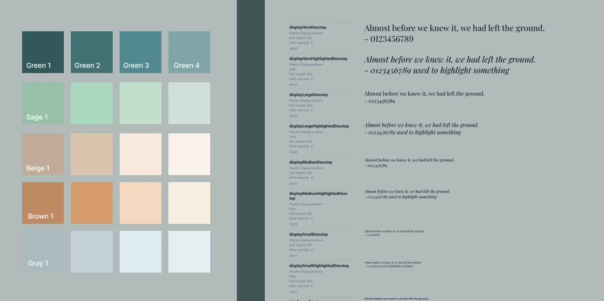

Expecting parent
Finding a doula she can trust
First-time parent. Lacks clear information about doula services and finds it hard to connect with the right one.
Between Health · Product Design Case Study
Doula support from bump to baby
A platform that matches expecting and postpartum families with doulas, designed as a mobile-first web app MVP in a few weeks.

Between Health connects expecting and postpartum mothers with doulas, to create a positive birth experience.
The client arrived with a long feature list, but the startup needed an MVP design within a few weeks. Simplicity had to win: we kept the core features and set the rest aside for later iterations.
PROCESS & CONTRIBUTION
We gathered requirements and analysed user stories, pain points, medical processes and competitor strategies. Card sorting with the client and MoSCoW prioritisation turned a long feature list into what the MVP truly needed.
RESEARCH ACTIVITIES
THE MVP HAD TO INCLUDE
Expecting parent
First-time parent. Lacks clear information about doula services and finds it hard to connect with the right one.
Independent doula
Five years in practice. Loses time to admin and scattered client information, and struggles to stand out.
Doula agency manager
Manages several doulas across disconnected tools, which slows scheduling and support.
Aspiring doula
Pursuing certification. Needs supervised experience, guidance and a way to start her practice.
Research showed that over 80% of our users would use the platform on a phone rather than a desktop. So every screen was designed for mobile first (375 px) and then scaled to desktop (1280 px).
From conversations about design preferences and a mood board, we created a style guide, a design system and its components: deep greens, sage, beige and soft brown, with Playfair Display italics to highlight the words that matter.
Components had to be easy to reuse on both mobile and desktop, because the project needed to continue later without a designer. The library grew with each iteration, as the product needed it.


A friendly, minimal product: every screen designed for mobile (375×812) and desktop (1280×832), with clickable prototypes to present to the partners and hand over to development.
What the design covers
Design goals were aligned with product management to meet the business objectives, and the UI was built to stay responsive across devices.
Wireframes defined the screen flows for each iteration and got the partners’ approval before anything moved to visual design.
DESIGN OUTCOME
A mobile-first web app for families and doulas, scoped to its core in a few weeks and designed so the team could keep going without a designer.
FOCUSED
MoSCoW prioritisation turned a long wish list into five core features.
MOBILE FIRST
Every screen designed for the phone first, then desktop.
HANDOVER
Reusable components so the product could grow after handoff.
Product discovery · User personas · MoSCoW prioritisation · Mobile-first design · Style guides · Component libraries · Developer handoff
NEXT PROJECT